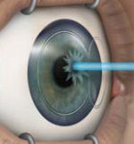

Юмор LASIK - Написано пациентами с осложнениями LASIK, чтобы помочь им справиться с ними.
Двусторонний LASIK - Проведение операции на обоих глазах одновременно удваивает риск!
IntraLase IntraLASIK iLASIK фемтосекундный безлопастной лазер комплексный лазер LASIK: проблемы и рекомендации - Новейшие технологии в LASIK рекламируются как "лучшие" и "безопасные". Посмотрите, что индустрия LASIK не рассказывает вам о универсальном лазере LASIK.
Сможет ли Мой Мозг Адаптироваться?- Как бы странно это ни звучало, индустрия LASIK на самом деле рассчитывает на то, что пациенты, проходящие курс LASIK, могут забыть, каким четким и ясновидящим было их зрение до проведения LASIK.
LVI / Институт искусственного зрения LASIK - Познакомьтесь с этой лазерной установкой, которая обрабатывает пациентов, как крупный рогатый скот.
Компания Alcon LADARVision - Читайте о судебных процессах, связанных с этим популярным лазером, используемым для LASIK.
Фатальный фокус - "Заговор лазерного зрения", книга Джонатана Маккса
Отсутствие эмпатии - Офтальмологи не заботятся о качестве жизни пациентов
Управление - Ваше видение может быть выставлено на продажу без вашего ведома!
Макулопатия - LASIK может ухудшить ваше зрение несколькими способами, и это только один из них...
Никакого Опыта не требуется - Хотите стать хирургом-лазеристом? Опыт работы не требуется!
Холодный лазер - Так почему же в лазерном отсеке стоит вонь горящей плоти?
Правда о наблюдении за волновым фронтом - Читайте о розыгрыше под названием "custom LASIK".
Еще больше пациентов с LASIK Внутри!- Хирурги LASIK нанимают маркетинговые фирмы, чтобы заманить пациентов на рискованную и ненужную операцию!
WSJ: "Мэлони не любил больных людей";- Загляните в сознание выдающегося хирурга-лазериста.
VISX получила предупреждение от FDA за нарушения в рекламе - Широколучевые лазеры VISX лишили ночного зрения бесчисленное количество пациентов, перенесших процедуру LASIK.
Сделай так, чтобы твой голос был услышан
АРХИВЫ НОВОСТЕЙ
7/28/2014: В солнечном мире маркетологов LASIK есть темная сторона .
5/7/2014: Реклама, упрощающая лазерную глазную хирургию, находится под пристальным вниманием в Ирландии. Читайте об этом на Лидер Лимерика .
2/14/2014 : Мельница LASIK, ЛасикПлюс , выкупленный косметической дерматологической компанией. Прочитать статью В 2012 году компания LasikPlus получила удар по Письмо с предупреждением FDA за то, что не сообщил о серьезных травмах.
3/12/2012 : Моррис Вакслер приглашает пострадавших пациентов LASIK и тех, кто поддерживает пострадавших пациентов LASIK, присоединиться к нему и обратиться в FDA с просьбой отозвать одобрение LASIK. Прочитанное письмо
12/16/2011: Леонард А. Ньюман, доктор медицины, Newman Lasik Centers получил письмо с предупреждением от Управления по контролю за продуктами и лекарствами за то, что не сообщил об осложнениях, связанных с LASIK, как того требует федеральный закон о отчетности по медицинскому оборудованию (MDR). Прочитанное письмо .
11/23/2010: Оправданы ли нападки на "критиков" LASIK? Лазерная лента новостей
11/23/2010: Центр лазерной офтальмологии на Гавайях подает заявление о банкротстве - Прочитать статью
10/27/2009: Ознакомьтесь со списком клиник LASIK, получивших письма с предупреждениями FDA. Ссылка на статью
10/26/2010: LCA-Видение [ ЛасикПлюс ] сообщает о слабом третьем квартале, чтобы закрыть больше центров. Прочитать статью
10/15/2009: Видение TLC и ЛасикПлюс Управление по санитарному надзору за качеством пищевых продуктов и медикаментов выпустило письма с предупреждениями о несоблюдении федерального закона при сообщении о проблемах с LASIK. Источник
10/4/2010: LCA-Видение [ ЛасикПлюс ] количество процедур сократилось на 25% в третьем квартале. Прочитать статью
9/17/2010: Хирург LASIK прекращает выполнение операции LASIK в ответ на долгосрочные исследования, которые демонстрируют регресс и потерю качества зрения. Прочитать статью
9/16/2010: Магнат LASIK, Марко Муса из Институт искусственного зрения LASIK , умер в возрасте 48 лет. Еще больше »
7/27/2010: LCA-Видение [ ЛасикПлюс ] закрываются филиалы в Саванне и Бирмингеме. Прочитать статью
7/7/2010: Штат начинает расследование в отношении глазного хирурга Lasik Пола Кутарелли. Прочитать статью
5/10/2010: Бывший руководитель отдела офтальмологических устройств FDA предупреждает, что риски LASIK перевешивают преимущества. Прочитанное письмо
4/5/2010: LCA-Видение [ ЛасикПлюс ] количество процедур сократилось на 31,6 процента в первом квартале. Прочитать статью
3/30/2010: Активисты LASIK добиваются проведения слушаний в Хилл по поводу бездействия FDA (fdaweb.com). Прочитать статью
3/3/2010: LCA-Видение [ ЛасикПлюс ] запасы упали более чем на 12 процентов после понижения рейтинга, что привело к небольшому объему процедур. Прочитать статью
2/7/2010: LCA-Видение [ ЛасикПлюс ] ищет новую бизнес-модель для увеличения объема LASIK. Адвокат пациентов LASIK говорит, что у производителей LASIK есть отличный стимул скрывать проблемы. Прочитать статью
2/19/2010: Чикагский хирург LASIK, Доктор Николас Каро , которому запрещено когда-либо снова проводить LASIK. Прочитать статью
2/14/2010: Доктор Квентин Франклин и ЛасикПлюс подали в суд за халатное отношение к LASIK. Прочитать пресс-релиз
14.11.2010: Институт зрения Lasik файлы Глава 11 банкротство защита. Прочитать статью
12/21/2009: TLC Vision, спонсор Tiger Woods, подает заявление о банкротстве . Прочитать статью
11/6/2009: Управление консультативного общественного здоровья принимаются меры по опасности ЛАСИК. Прочитать статью
9/14/2009: LASIK Surgery Watch призывает исполняющего обязанности директора FDA-CDRH Джеффри Шурена отозвать разрешение на использование лазеров, используемых для проведения LASIK. Прочитать статью
6/11/2009: Активист LASIK рассказывает GAO, IG О 20-кратном превышении травматизма: Прочитать статью
6/10/2009: Адвокат пациента LASIK Пишет Обаме, требуя вмешательства: Прочитать статью
6/3/2009: Жертвы операции LASIK усиливают протесты у здания FDA на Капитолийском холме: Прочитать статью
5/21/2009: В Конгресс США направлено письмо с требованием ввести мораторий на LASIK. Источник
5/19/2009: У профессионального игрока в гольф Питера Лонарда возникли проблемы со зрением после двух операций LASIK. Источник